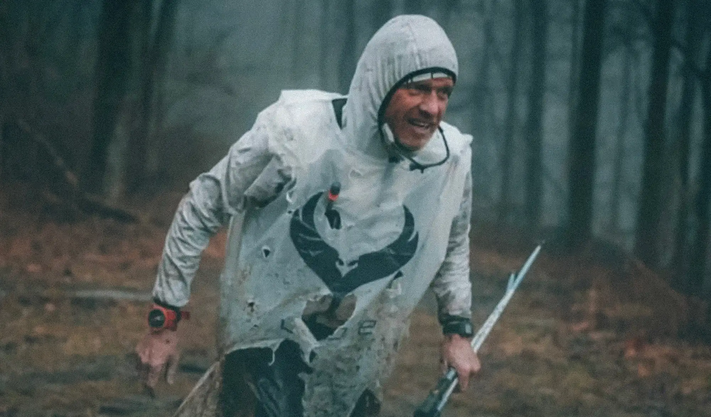
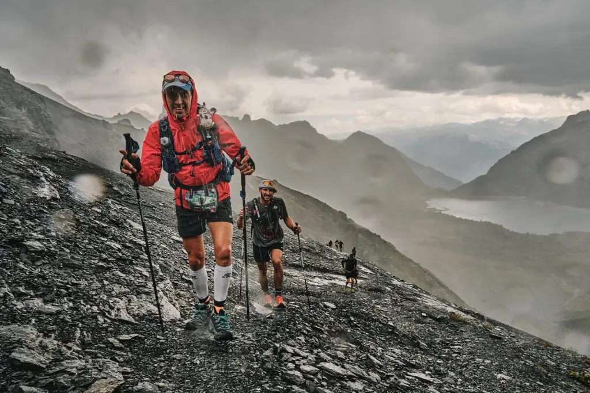
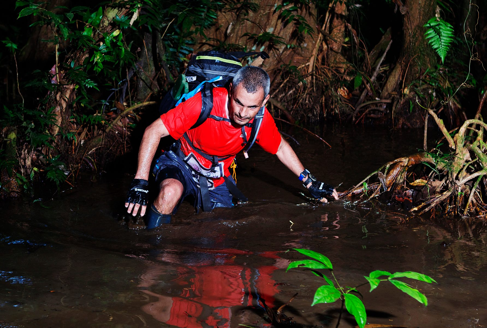
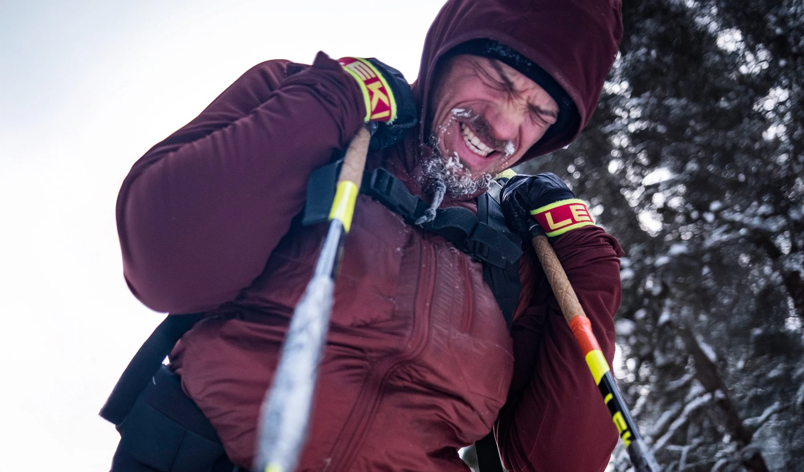
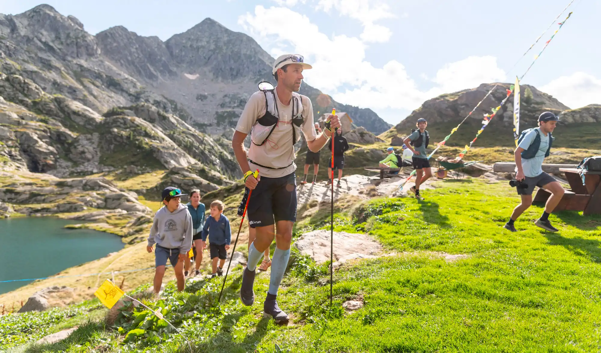

| Rang | Image | Course | Pays | Distance | Dénivelé+ | Particularités | Commentaire |
|---|---|---|---|---|---|---|---|
| 🥇 |  |
Barkley Marathons | États-Unis | 160 km | 18 000 m | Navigation sans balisage, ~1 % de finishers | Finir cette course est plus rare que gagner au loto ! |
| 🥈 |  |
SwissPeaks Trail 700 | Suisse | 685 km | 48 000 m | Traversée continue des Alpes valaisannes, terrain très technique, autonomie totale ⛰️ | 700 km de montagnes… idéal si tu veux remettre en question toutes tes décisions de vie. |
| 🥉 |  |
Jungle Marathon🌴 | Brésil | 254 km sur 6 étapes | 6 000 m | Chaleur et humidité extrêmes💦🥵 insectes, terrain boueux et navigation complexe | En bonus : Tu deviendras ami avec chaque moustique local🦟 |
| 4 |  |
Yukon Arctic Ultra | Canada | 430 km | 11 000 m | Hiver extrême, -50°C possibles, autonomie totale, neige et sol gelé 🥶❄️ | Idéal pour ceux qui n'ont pas peur de perdre des doigts, des mains ou des bras !!!. |
| 5 |  |
Tor des Géants | Italie | 330 km | 24 000 m | Montagnes du Val d’Aoste, course sur 6-7 jours, nuits blanches fréquentes | La boucle infernale du Tor : monter, descendre, répéter… mais au moins la vue est sympa :) |